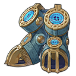

추천 광추
바람에 흩날리는 거짓말
빠른 선행동과 적 방어력 감소
효과 자세히
속도 +18%. 공격 시 기본 확률 120%로 방어력 −16%(2턴), 전투 속도 170 이상이면 별도 −8%(2턴).
그 무수한 봄날
효과 명중과 적이 받는 피해 증가
효과 자세히
효과 명중 +60%. 공격으로 기본 확률 60% 무장해제 → 피해 취약 +10%(2턴). 자신의 지속 피해 적에게 궁지 몰이 성공 시 추가 +14%(2턴).
땀방울처럼 빛나는 결심
방어력 감소로 파티 화력 지원
효과 자세히
장착한 캐릭터는 적 명중 시 만일 해당 목표가 함락 상태가 아닐 경우 100%의 기본 확률로 대상을 함락 상태에 빠트린다. 함락 상태의 적은 방어력이 16% 감소. 지속 1턴
사냥감의 시선
효과 명중·연소 피해 보강
효과 자세히
효과 명중이 40% 증가하고, 동시에 가하는 지속 피해가 48% 증가
고독의 치유
필살기 후 지속 피해 보강
효과 자세히
격파 특수효과 +40%. 필살기 → 지속 피해 +48%(2턴). 자신의 지속 피해가 적용된 적이 처치되면 에너지 +6pt.
추천 유물
깊은 감옥에 수감된 죄수 4 · 창공 전선 그라모스 2
- 머리
 주옵션HP부옵션효과 명중 · 속도 · 공격력% · HP%
주옵션HP부옵션효과 명중 · 속도 · 공격력% · HP% - 손
 주옵션공격력부옵션효과 명중 · 속도 · 공격력% · HP%
주옵션공격력부옵션효과 명중 · 속도 · 공격력% · HP% - 몸통
 주옵션효과 명중 / 공격력%부옵션효과 명중 (주옵션 제외) · 속도 · 공격력% (주옵션 제외) · HP%
주옵션효과 명중 / 공격력%부옵션효과 명중 (주옵션 제외) · 속도 · 공격력% (주옵션 제외) · HP% - 다리

주옵션속도부옵션효과 명중 · 공격력% · HP% - 구체
 주옵션화염 피해 증가 / 공격력%부옵션효과 명중 · 속도 · 공격력% (주옵션 제외) · HP%
주옵션화염 피해 증가 / 공격력%부옵션효과 명중 · 속도 · 공격력% (주옵션 제외) · HP% - 매듭
 주옵션공격력%부옵션효과 명중 · 속도 · HP%
주옵션공격력%부옵션효과 명중 · 속도 · HP%
이 조합을 추천하는 이유
죄수 4세트 → 적의 지속 피해 1종당 방어력 6% 무시, 최대 18%. 속도 135/160에서 그라모스 피해 보너스.
가상공간을 누비는 메신저 2 + 고행의 길에 다시 오른 사제 2 · 생명의 바커 공 2
- 머리
 주옵션HP부옵션효과 명중 · 속도 · HP% · 방어력%
주옵션HP부옵션효과 명중 · 속도 · HP% · 방어력% - 손 주옵션공격력부옵션효과 명중 · 속도 · HP% · 방어력%
- 몸통
 주옵션효과 명중부옵션속도 · HP% · 방어력%
주옵션효과 명중부옵션속도 · HP% · 방어력% - 다리
 주옵션속도부옵션효과 명중 · HP% · 방어력%
주옵션속도부옵션효과 명중 · HP% · 방어력% - 구체
 주옵션HP% / 방어력%부옵션효과 명중 · 속도 · HP% (주옵션 제외) · 방어력% (주옵션 제외)
주옵션HP% / 방어력%부옵션효과 명중 · 속도 · HP% (주옵션 제외) · 방어력% (주옵션 제외) - 매듭
 주옵션에너지 회복효율부옵션효과 명중 · 속도 · HP% · 방어력%
주옵션에너지 회복효율부옵션효과 명중 · 속도 · HP% · 방어력%
이 조합을 추천하는 이유
속도 2세트 두 개로 선행동. 바커 공 → 에너지 회복효율 +5%, 속도 120 이상 시 전투 첫 행동 40% 당김.
이 정도면 잘 키웠다
동일 파티·광추 기준 · 조건 [*]
| 스탯 | 추천 스탯 | 준종결 | 종결 |
|---|---|---|---|
| 효과 명중 [*] 100% 기본 확률이 효과 저항 40%인 적에게 적중하는 기준. 일반 공격 연소는 기본 확률이 낮습니다. | 67% | 67% 유지 | 67% 유지 |
| 속도 [*] 카프카 기폭 전에 연소와 불쇼를 준비하세요. | 134 | 143 | 160 비교 |
| 공격력 [*] 지속 피해 세팅에서 명중·속도 이후. | 2,600 | 2,800 | 3,000+ |
육성 단계의 기준
Lv.80 · 5성 유물 +15. Prydwen 참고 범위와 발동 조건을 바탕으로 나눈 편집 목표입니다.
성혼과 추천 돌파
성혼 1은 디버프 적중을 보조하고, 성혼 6은 불쇼의 최대 피해 취약을 높입니다.
1전투 스킬 → 효과 저항 −10%추천
전투 스킬 발동 시 100%의 기본 확률로 피격된 적의 효과 저항이 10% 감소. 지속 2턴
2연소 적 → 연소 피해 배율 +40%
적이 연소 상태면 계네빈의 일반 공격과 전투 스킬이 해당 적에게 부여하는 연소 상태의 피해 배율이 40% 증가
3전투 스킬 +2 · 일반 공격 +1
전투 스킬 +2 · 일반 공격 +1
4자신의 연소 발동 → 에너지 +2pt
계네빈이 부여한 연소 상태 피해가 발동할 때마다 자신의 에너지를 2pt 회복
5필살기 +2 · 특성 +2
필살기 +2 · 특성 +2
6불쇼 최대 +1스택추천
불쇼의 중첩 가능 스택 수가 1스택 증가
추천 파티


기본 운영과 행적
기본 운영
첫 스킬로 여러 적에게 연소를 건 뒤, 연소가 남은 적은 일반 공격으로 유지하세요. 불쇼를 쌓은 뒤 필살기로 기존 연소를 발동합니다.
행적 우선순위
전투 스킬 = 특성 > 필살기 > 일반 공격. 일반 공격의 연소 부여 행적을 열어 포인트를 확보하세요.
아하 속도 계산기 →기준과 출처 · 2026-11-25
4.7 · 한국어 게임 데이터 및 Prydwen 육성 분석